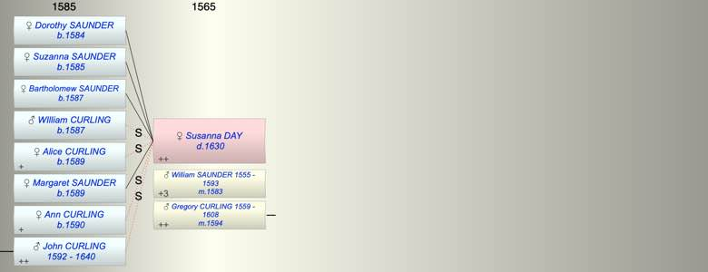

| [Index] |
| Susanna DAY ( - 1630) |
|  |
| m. (1) 28 Jul 1583 William SAUNDER (1555 - 1593) at St Laurence |
| m. (2) 1594 Gregory CURLING (1559 - 1608) at St Laurence |
| d. 1630 |
| Children (4): |
| Dorothy SAUNDER (1584 - ) |
| Suzanna SAUNDER (1585 - ) |
| Bartholomew SAUNDER (1587 - ) |
| Margaret SAUNDER (1589 - ) |
| Events in Susanna DAY ( - 1630)'s life | |||||
| Date | Age | Event | Place | Notes | Src |
| 28 Jul 1583 | Married William SAUNDER (aged 28) | St Laurence | ex MW | ||
| 1584 | Birth of daughter Dorothy SAUNDER | St Laurence | Note 1 | ||
| 1585 | Birth of daughter Suzanna SAUNDER | St Laurence | Note 2 | ||
| 1587 | Birth of daughter Bartholomew SAUNDER | St Laurence | Note 3 | ||
| 1589 | Birth of daughter Margaret SAUNDER | St Laurence | Note 4 | ||
| 1593 | Death of husband William SAUNDER (aged 38) | St Laurence | |||
| 1594 | Married Gregory CURLING (aged 35) | St Laurence | Note 5 | ||
| 1608 | Death of husband Gregory CURLING (aged 49) | St Laurence | buried 31 May 1608 ex FMP PR | ||
| 1630 | Susanna DAY died | ||||
| Death of step son WIlliam CURLING | Note 6 | ||||
| Created on a Mac™ using iFamily for Mac™ on 8 Oct 2023 |